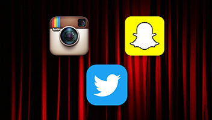

Drew Smith
Web Design Work

×
https://www.snapchat.com/
Background of Snapchat
Creation date: September 2011 Creator: Evan Spiegel
×
https://www.instagram.com/
Background of Instagram
Creation date: October 6th, 2016 Creator: Kevin Systrom
×
https://www.instagram.com/
Background of Twitter
Creation date: March 21st, 2006 Creator: Jack Dorsey, Evan Williams, Noah Glass, and Biz Stone